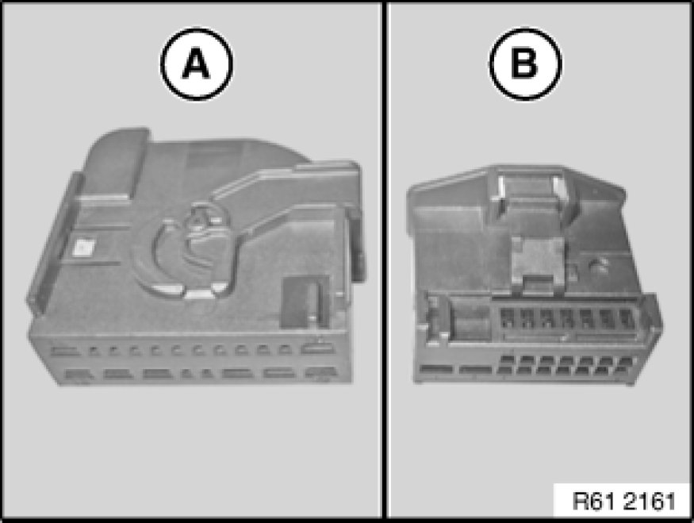
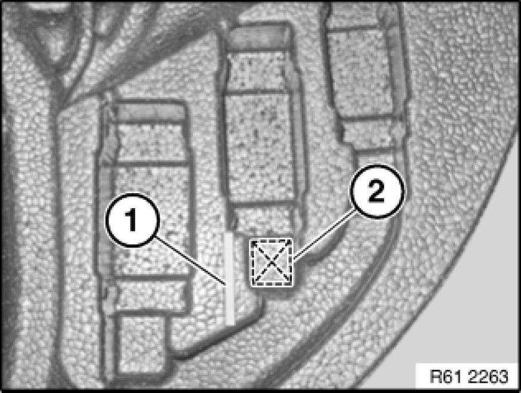
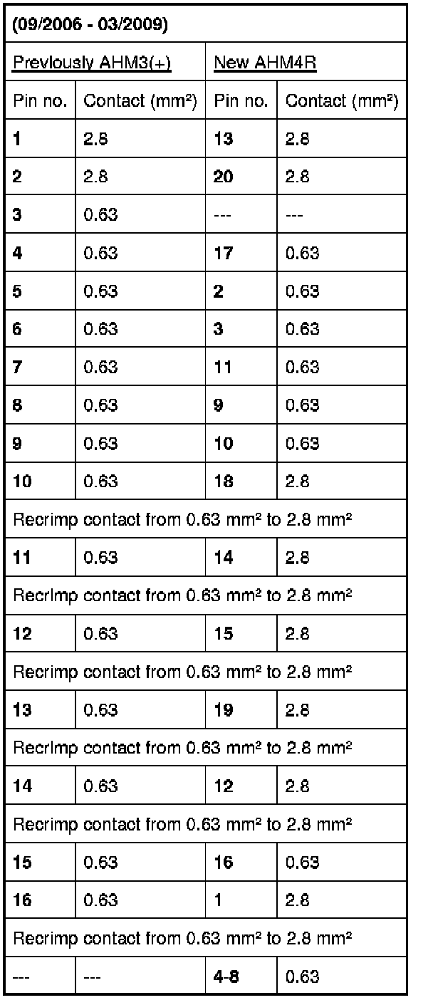
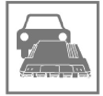

61 35 502 Replacing Trailer Module (09/2006-03/2009)
61 35 502 - Replacing trailer module (09/2006-03/2009)

Special tools required:
- 61 0 202 61 0 200 Crimping Set (Basic Tool)
- 61 0 230
- 61 0 316
- 61 0 324

Note:
From 03/2009 trailer module AHM3+ will be replaced by trailer module AHM4R.
Plug connectors and associated pin assignments must be adapted if the old plug connector AHM3(+) is fitted.
-A)
- Plug connector, new AHM4
-B)
- Plug connector, old AHM3(+)

Necessary preliminary tasks:
- Remove trailer module Removing and Installing/Replacing Trailer Module

From build date/version 03/2007 Series E60/61:
Installation:
Cut out device holder up to marking (1).
Cut out indentation in area (2).
Make sure AHM module is exactly seated and wiring harness is correctly routed.

Note:
Positions of plugs and associated pin assignments are set out in the diagnosis system.
The repair instruction represents the highest vehicle configuration. Pin assignments of plug connections may be absent if optional equipments are not fitted.
Special tools for disconnecting:
Secondary lock:
Special tool 61 0 324
Primary lock:
Special tool 61 0 316
Special tool for crimping:
Double flat spring contact:
Crimping tool special tool 61 0 202 61 0 200 Crimping Set (Basic Tool) (crimping tool) with special tool 61 0 230 (matrix)


Carry out vehicle programming/coding Programming and Relearning.